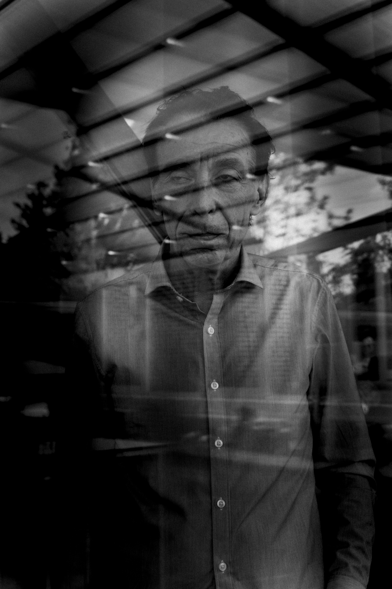

> ABOUT
Toen hij 30 jaar was, was alles perfect, hij was een bekende >fotograaf en had een zeer succesvol leven. Zijn inkomen was ook niet slecht, hij had een penthouse in New York city. Hij gebruikte zijn geld alsof het niets waard was. Hij was ook een Casanova. Op een dag wou hij naar een casino gaan met zijn vrienden. Dat waren geen goede vrienden, ze wilden alleen zijn geld. Plots gebeurde er iets waarvan hij nooit had gedacht dat het ging gebeuren. Hij >verliest alles diezelfde > nacht , zijn penthouse, appartementen en zijn auto’s. Hij was dakloos. Er werd hem een deal aangeboden: voor 3 maaltijden per dag en >een dak boven zijn hoofd. Hij moest gaan werken voor de maffia. Hij moest mensen >kidnappen , soms moest hij de mensen ergens naartoe brengen en soms moest hij ze >vermoorden. Na een tijd wou hij stoppen maar dat ging niet zo maar, hij zat vast. Hij begon met sparen toen hij eindelijk genoeg geld had voor een vliegticket. Eindelijk kon hij weglopen van alles en iedereen en vooral de maffia.